Как перевернуть камеру: на Айфоне, Андроиде

- Как убрать зеркальное отображение на селфи камере
- Перевернуть камеру на Айфоне
- Как перевернуть камеру на Андроид
- Как перевернуть камеру в Телеграм
- Как перевернуть камеру в Ватсапе при видеозвонке
- Как перевернуть камеру в прямом эфире Инстаграма*
- Как перевернуть камеру на ноутбуке Asus
- Как перевернуть камеру в Скайпе
- Как перевернуть камеру в Зуме
- Как перевернуть камеру в Дискорде
Перевернуть камеру на Айфоне или Андроиде возможно через стандартные параметры камеры. В нижней части экрана находится кнопка, с помощью которой можно поменять отображение с основной на фронтальную и наоборот.
Как убрать зеркальное отображение на селфи камере
Иногда нужно, чтобы селфи камера не переворачивала изображение и не зеркалила. Отключить данную функцию можно в настройках камеры:
- Открываем камеру, переключаемся на селфи режим.
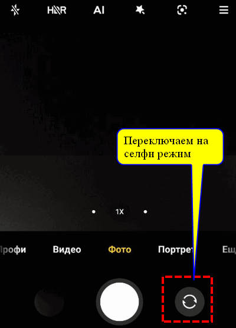
- Жмем 3 полоски.
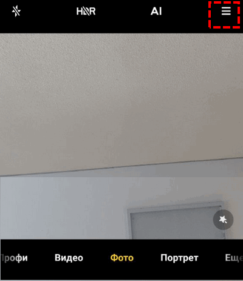
- Открываем настройки камеры.
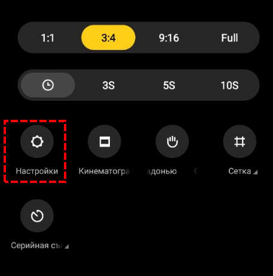
- Убираем зеркальное отображение селфи камеры.
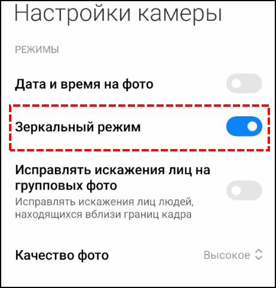
Перевернуть камеру на Айфоне
Чтобы перевернуть камеру при создании селфи или стандартного фото, пользователю нужно нажать по соответствующей кнопке. Происходит автоматическая смена с основной на фронтальную. Как поменять отображение камеры:
- Зайти в приложение «Камера» - нажать снизу по круглому значку.
- Поменяется отображение на фронтальную или основную.
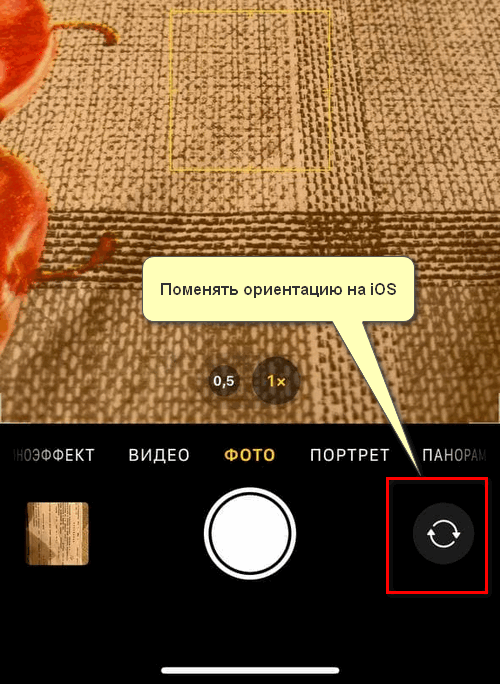
Если же не получается перевернуть камеру на Айфоне, то проблема может быть в неправильно выбранном режиме или технической неполадке. К примеру, в режиме панорамной съемки смена формата заблокирована. Поэтому, пользователю нужно переключиться на основной тип съемки и уже после переключаться на фронтальную/основную.
Как перевернуть камеру на Андроид
Как и на iOS, на Андроиде нет проблем со сменой отображения формата съемки. Чтобы изменить отображение камеры:
- Зайти в приложение для съёмки – нажать снизу по значку: «Повернуть».
- Подождать, пока изменится ориентация съёмки.
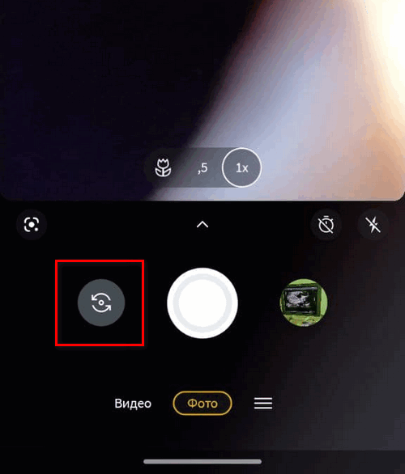
Если владелец устройства хочет воспользоваться вспышкой, то на большинстве устройств недоступна с фронтальной камеры. Но есть программная подсветка: появляется в режиме «Ночной». Если пользователь хочет просто создать перевернутое изображение:
- Зайти в шторку уведомлений – отключить автоповорот.
- Перевернуть телефон и сделать фото.
Далее, нужно вернуться к Галерее и посмотреть, какое фото получилось. Или же, используя встроенный редактор для картинки, снимок можно перевернуть. Но режим изменения доступен до начала съемки. То есть, во время записи видео нельзя поменять ориентацию камеры на основную или фронтальную.
Как перевернуть камеру в Телеграм
Перевернутое изображение веб-камера в приложении Телеграм возможно при видеозвонки или создании нового снимка. Как сделать перевёрнутую камеру в Телеграм:
- Зайти в приложение – выбрать чат.
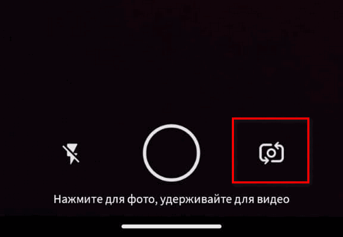
- Выбрать сверху: «Видеовызов» - при подключении к звонку, появится снизу значок «перевернуть».
То же доступно и в режиме создания стандартных снимков:
- Нажать в мобильном приложении по кнопке: «Прикрепить файл».
- Камера – значок «Изменить отображение».
Помимо изменения ориентации, пользователь может менять качество отправляемого файла. В основном, это касается видеорежима, где есть настройки оптимизации качества.
Как перевернуть камеру в Ватсапе при видеозвонке
В приложении Ватсап, создавая видеоконференцию, пользователь также может поменять отображение камеры. Это возможно, как при уже активной связи, так и во время соединения с абонентом. Как изменить фронтальную на основную:
- Зайти в приложение – выбрать контакт, с которым нужно связаться.
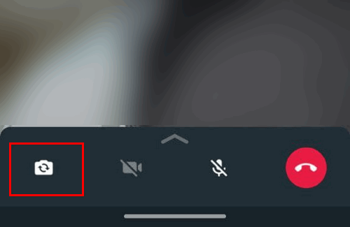
- Снизу появится кнопка: «Перевернуть» - нажать, чтобы изменить ориентацию.
Если же, пользователь желает позвонить с перевернутым фото сверху-вниз, то достаточно отключить автоповорот экрана. Стандартная настройка самого смартфона влияет на отображение камеры в мессенджере.
Как перевернуть камеру в прямом эфире Инстаграма*
Начиная трансляцию, перевернуть изображение на камере заднего вида возможно при записи или во время подготовки. В боковой части меню появится кнопка: «Изменить отображение», где есть изменение с основной на фронтальную и наоборот:
- Зайти в Инстаграм* – нажать сверху по кнопке «+».
- Выбрать: «Прямой эфир» - добавить основные настройки.
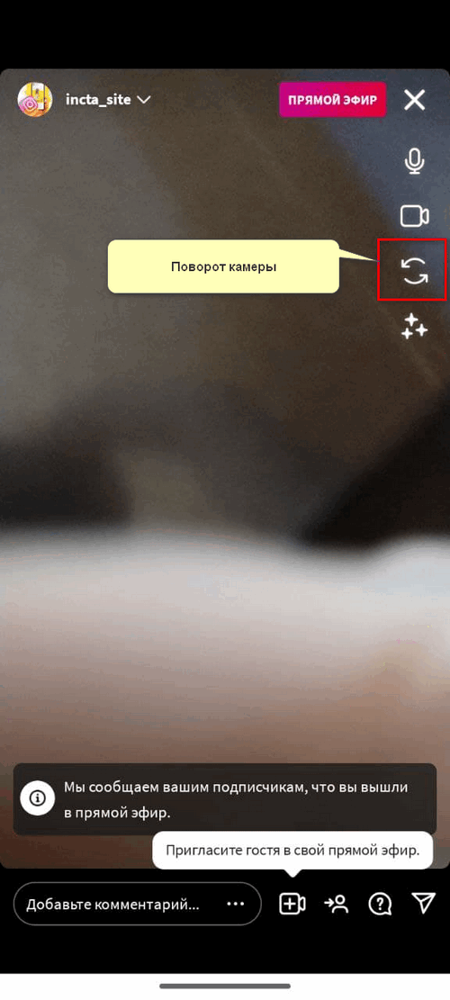
- Запустить трансляцию – в правой части меню: «Повернуть».
Помимо поворота камеры, владелец профиля может добавлять стикеры, текст или маску. Они расположены в том же меню, что и инструменты для изменения формата камеры.
Как перевернуть камеру на ноутбуке Asus
После обновлений или переустановки операционной системы на новую версию, в ноутбуках Asus возникла ошибка, связанная с перевернутой камерой. Причиной, почему камера переворачивает изображение, в основном стали драйверы. Это можно решить, через переустановку утилит, обратившись к официальному сайту. Как обновить драйвер:
- Перейти к поиску – ввести: «Диспетчер устройств».
- Найти текущее работающее приложение «Web Camera» - нажать правой кнопкой мыши.
- Выбрать: «Удалить» - вернуться к поиску и ввести: «dxdiag».
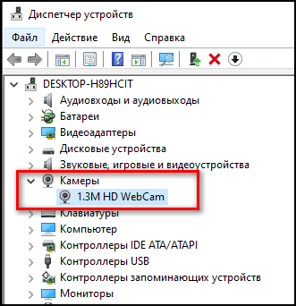
- Выполнить команду – посмотреть изготовителя и модель ноутбука/компьютера.
- Перейти в браузер – найти сайт поддержки разработчика и изготовителя.
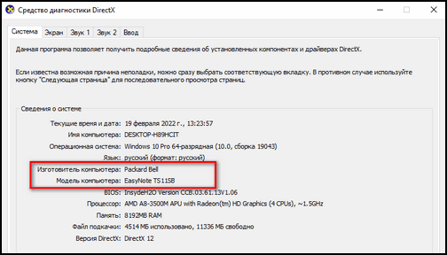
- Воспользоваться поиском драйверов для своей модели – установить заново драйвер на видеокамеру.
Проще осуществлять поиск, если сразу указать модель и искать по запросу: «Скачать драйвера для нотбука/компьютера». Появится список сайтов, которые предлагают утилиты даже для устаревших версий ПК.
Как перевернуть камеру в Скайпе
В приложении Skype случаются ошибки, когда камера находится в перевернутом состоянии. Перевернуть камеру в Скайпе возможно с компьютерной версии, где есть настройки отображения. Как отредактировать формат:
- Открыть Skype – выбрать рядом с аватаркой: «Настройки».
- Звук и видео – Настройки веб-камеры.
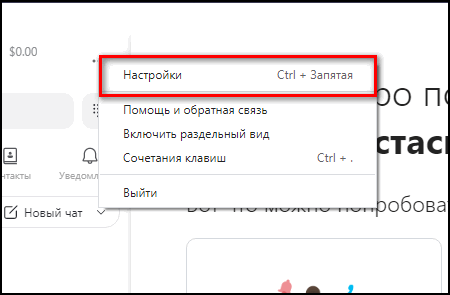
- Появится окно с функцией цветокоррекции – выбрать: «Управление камерой».
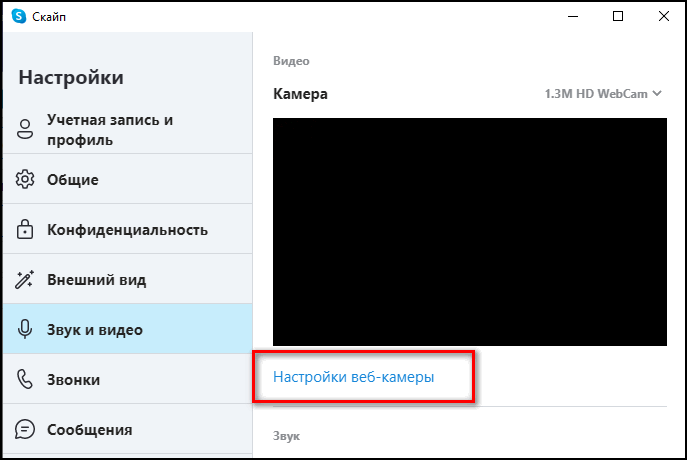
- Пункт «Разворот» - перевернуть камеру.
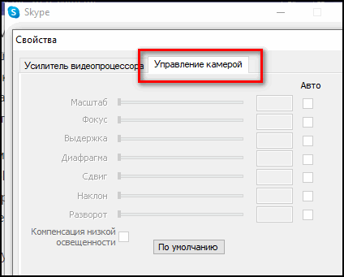
- Протестировать отображение при видеозвонке.
Если же этот вариант не помог, то можно воспользоваться следующим – установить программу ManyCam. В её функции входит работа с изображением на видеокамере, а при настройке отображения в Skype программу можно выбрать основной для передачи картинки.
Как перевернуть камеру в Зуме
Для работы в Zoom есть несколько форматов: браузерный и компьютерная программа. В ПК-версии есть вариант, как перевернуть изображение через стандартные настройки:
- Зайти в компьютерную версию программы.
- Нажать сверху по значку: «Настройки» - Видео.
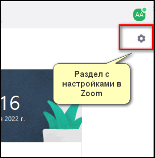
- Над меню отображения камеры «Повернуть на 90 градусов».
- Посмотреть, какие есть варианты отображения.
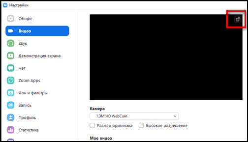
Или второй вариант, если первый не сработал:
- Настройки видео – Расширенные.
- Оптимизировать качество – установить галочку.
- Если есть пункт «Аппаратное ускорение» - включить его.
После, пользователю нужно перезагрузить программу и посмотреть, вступили ли изменения в силу.
Как перевернуть камеру в Дискорде
В программе Дискорт камера не является основным устройством для общения, так как главная направленность – на оптимизацию аудиосвязи. Но функция связи посредством видео также присутствует. Есть три способа, как решить проблему с некорректно работающей видеосвязью:
- установить обновления для операционной системы;
- указать другую камеру, как основную, в настройках;
- переустановить Дискорд.
Чтобы проверить корректность работы:
- Открыть Дискорд – нажать снизу по «Настройкам пользователя».
- Видео и звук – снизу указано: «Камера».
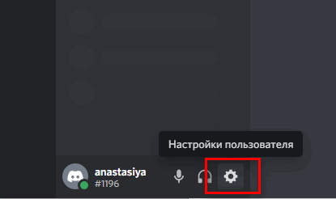
- Выбрать в выпадающем списке необходимую.
Также, выше есть меню предпросмотра, где можно посмотреть корректность отображения. Приложение можно переустановить, если его удалить и перейти на официальный сайт для установки. Это возможно через настройки системы: Пуск – Приложения и возможности. В списке появится Discord, где его можно удалить с дополнительными компонентами.